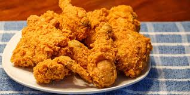
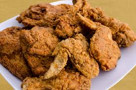
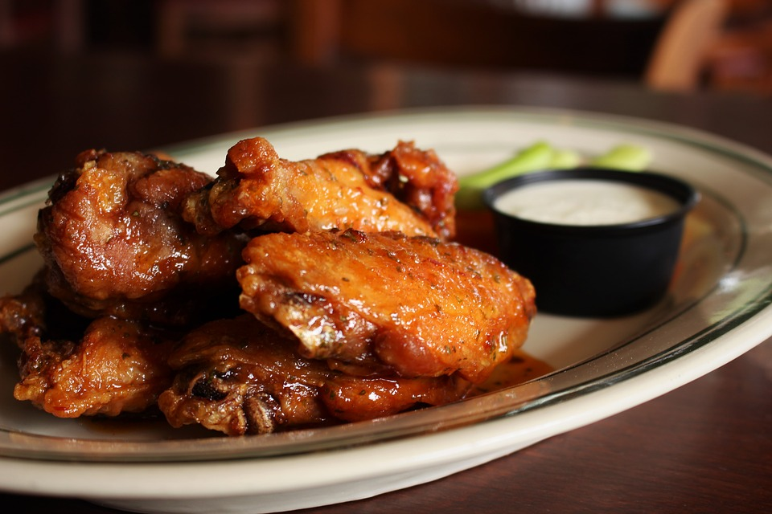
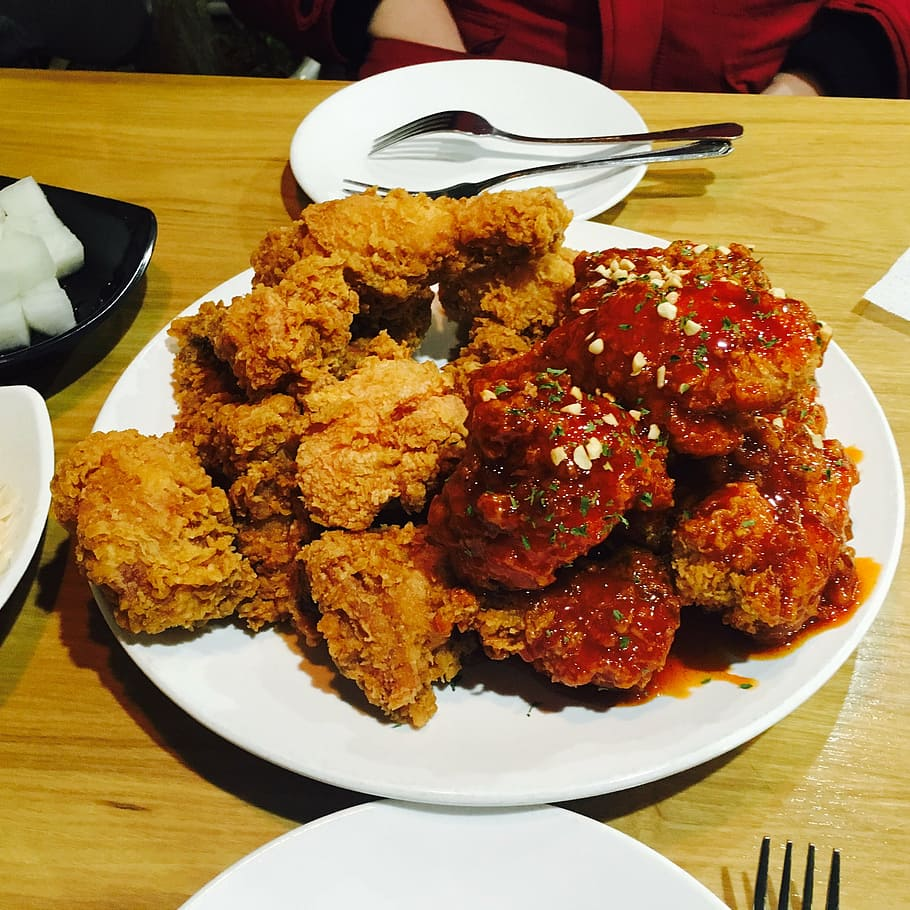
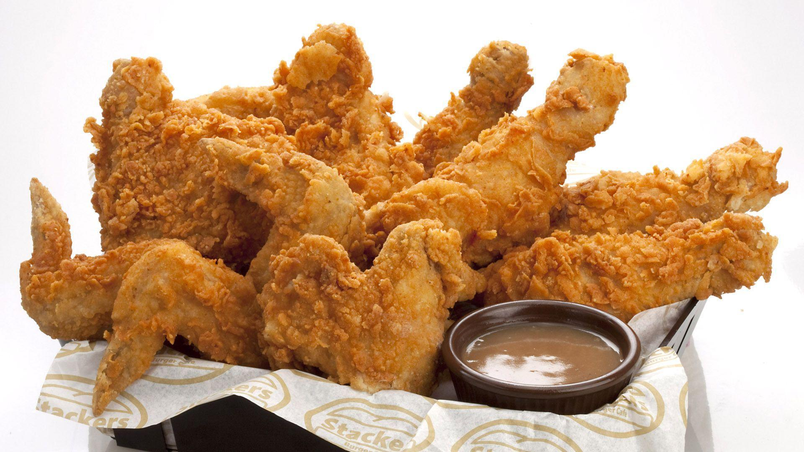

1925 Ridge Ave Evanston, IL 60201 , (847) 328-9360
Up in the northern suburbs, Evanston Chicken Shack has been frying terrific breasts, thighs, legs, and wings for nearly three decades. A simple salt-and-pepper breading gives the bird its distinct flavor, and wallet-friendly lunch box specials offer chicken and sides for under $9.
5347 North Clark Street，IL 60640 ,（773）275-5725
Chef Paul Fehribach uses a classic Edna Lewis recipe for his excellent version, brining Amish chicken in herbs and spices and then frying it in leaf lard, ham drippings, and clarified butter.
400 South Financial Place, , IL 60605 , (312) 285-2207
What started out as a food truck has now blossomed into four brick-and-mortar locations. Chef and owner Joe Scroggs, who hails from North Carolina, serves two types of poultry. The first is Nashville-style hot chicken, slathered with cayenne paste, that has a hint of sweetness and lots of spice. The second is a milder herb-seasoned chicken. Either can also be eaten in sandwich form on a brioche roll or fluffy biscuit.
3343 North Broadway, IL 60657 , (773) 728-2500
Ms. T’s owner Tia Tanner previously operated a Harold’s outpost before breaking off and opening a restaurant in Lakeview. Her experience with the beloved Chicago chain is apparent after biting into the fried chicken. The cooked-to-order meat is juicy, the skin is crispy, and it’s decidedly better when doused in mild sauce.
3361 N Elston Ave,Chicago, IL 60618, (773) 478-4000
The popular Avondale spot was conceived after a series of pop-up dinners led to a cult following for its honey-butter-covered bird. Christine Cikowski and Joshua Kulp rode that momentum and launched a restaurant dedicated to the sweet-and-savory specialty in 2013. Since then, they’ve put the bird on everything from nachos to sandwiches, but the deboned fried chicken still remains a favorite.